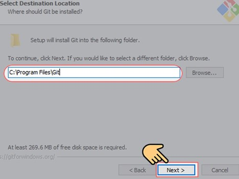

Cài đặt Git
Hướng dẫn cài đặt Git trên các nền tảng khác nhau.
Bước 1: Vào trang web tải Git - https://git-scm.com/downloads. Bạn lựa chọn mục Downloads
Bước 2: Sẽ có rất nhiều phiên bản phù hợp với các hệ điều hành khác nhau để bạn lựa chọn. Bạn chọn phiên bản dành cho Windows.
Bước 3: Mở file Git bạn vừa mới tải xuống chọn Run.
Bước 4: Một cửa sổ cài đặt hiện ra bạn chọn Next.
Bước 5: Lựa chọn vị trí lưu mà bạn mong muốn sau đó chọn Next.
